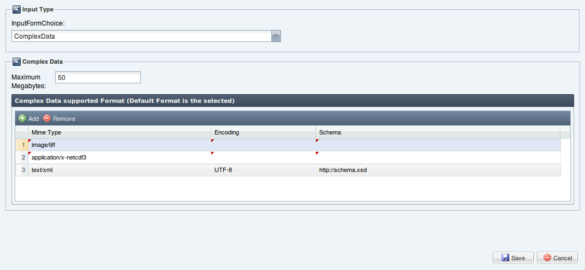
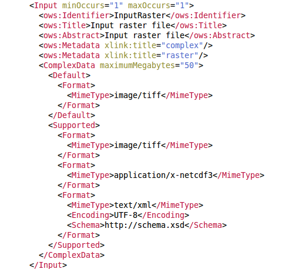

Indicates that this input shall be a complex data structure(such as a GML fragment), and provides lists of formats, encodings, and schemas supported.
The Complex Data Input in the wizard can be defined by the following interface:

MaximumMegabytes: the maximum file size, in megabytes, of this input. If the input exceeds this size, the server will return an error instead of processing the inputs.
Default/Supported Format: identifies the default/supported format for this input. The process shall expect input in this combination of Format/Encoding/Schema unless the Execute request specifies otherwise. Default format(mandatory) is the selected item in the Complex Data Grid.
MimeType: identification of default Format for process input.
Encoding: reference to default encoding for process input.
Schema: reference to default XML Schema Document for process input.
The result we get (in WPS Current Process Description text area) to click the Save button is shown in the following:
